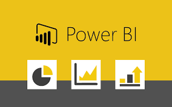

I utilized a Kaggle dataset and performed data cleaning using SQL Server Management Studio (SSMS). The project involved identifying and rectifying inconsistencies, handling missing values, and ensuring data integrity, resulting in a refined and reliable dataset ready for analysis.


I used a Covid-19 dataset and performed data exploration with SQL Server Management Studio (SSMS). The project involved analyzing trends, identifying key patterns, and extracting meaningful insights to understand the pandemic's impact, utilizing SQL queries to uncover critical information and support data-driven decision-making.

This holds the Tableau Dashboards for projects on Covid 19, Airbnb Listing, Job description
I analyzed a movies dataset using Python and its libraries, such as pandas, numpy, and matplotlib. The project involved protraying correlations between various parameters, such as ratings, box office revenue, and genres, to uncover significant relationships and insights that could inform decision-making in the film industry.
I automated the process of pulling data from a cryptocurrency website API using Python. The project involved scripting to regularly fetch and store real-time crypto prices and trends, ensuring up-to-date information for analysis and decision-making.

In this Project we scrape data from Amazon to Analyze price data for products

In this project we conducted a survey on data jobs and formed visualisation based on the various parameters.